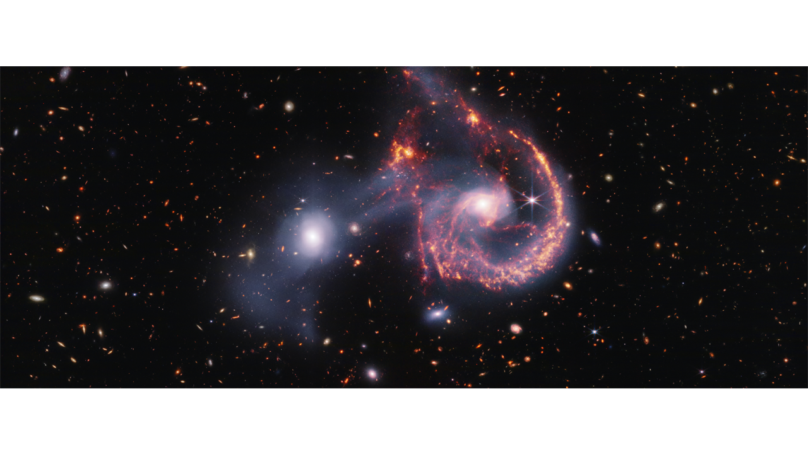

The composite image of Arp 107, captured by the James Webb Space Telescope, reveals intriguing details about the collision of two galaxies and their star formation.🌌✨
The near-infrared data highlights older stars and a bridge of gas connecting the galaxies.🌠🔗
The mid-infrared data showcases vibrant young stars and star-forming regions.🌟🔥
Notably, the collision point features a gap in the spiral galaxy, symbolizing both a new wave of star formation and an endearing "smile" shape.😊🌌

The image, captured by Webb’s MIRI, reveals the supermassive black hole in the center of the large spiral galaxy on the right.🌌🕳️
The black hole pulls dust into lanes and shows Webb’s characteristic diffraction spikes from light interacting with the telescope.✨
A key feature highlighted by MIRI is the millions of young stars forming, displayed in blue.🌟🔵
The small elliptical galaxy on the left has completed much of its star formation and contains many organic molecules.🌌🔬